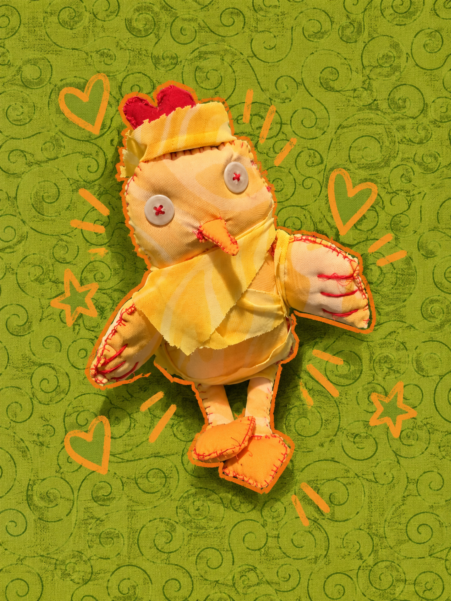

⚠️
🌽
✳

LAST SEEN: PANICKING OVER NOTHING // 005
♡ About Pollo
Pollo is a very anxious little chicken who
worries about absolutely EVERYTHING.
A leaf falling? Terrifying. Someone sneezing?
The end of the world. A weird noise outside?
He's already planning his escape.
He's constantly convinced something terrible
is about to happen, even when everything
is perfectly fine.
And unfortunately, whenever Pollo gets nervous,
he has to poop. Which is pretty much all
the time.
✿ His Personality
- Extremely anxious
- Overthinks absolutely everything
- Easily startled
- Always expects the worst
- Runs away from his own shadow
- Has a very nervous stomach
- Sweet when he isn't panicking